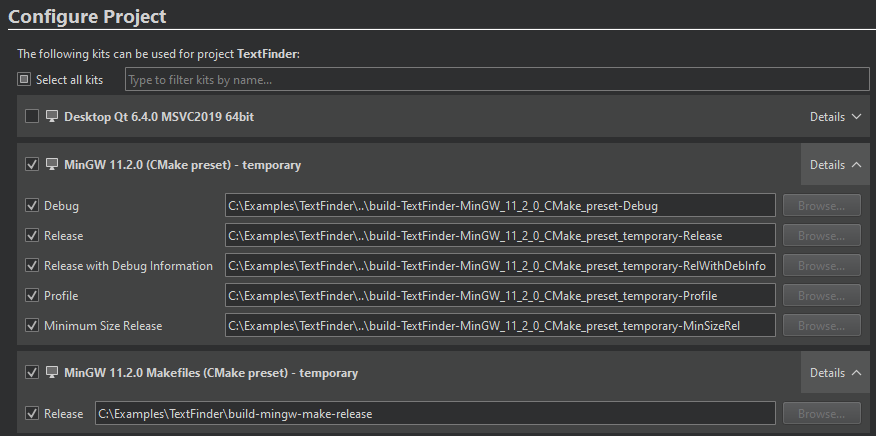
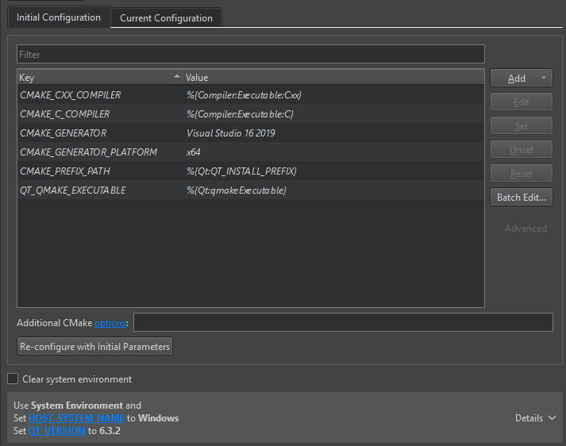

CMake Presets
CMakePresets.json has options for project-wide builds, whereas CMakeUserPresets.json has options for your local builds.
Create the presets files in the format described in cmake-presets(7) and store them in the project's root directory. You can then see them in the Projects view.
Qt Creator supports presets up to version 3 (introduced in CMake 3.21), but does not enforce version checking. It reads and uses all the fields from version 3 if present. It does not support test presets.
You can import the presets the first time you open a project, when no CMakeLists.txt.user file exists or you have disabled all kits in the project.

You can view the presets in the Initial Configuration field and in the environment configuration field below it.

To update changes to the CMakePresets.json file, select Build > Reload CMake Presets, and then select the presets file to load.
Configure Presets
The following configure presets instruct CMake to use the default generator on the platform and specify the build directory for all build types. NOT_COMMON_VALUE is displayed in Initial Parameters and AN_ENVIRONMENT_FLAG in the environment configuration field.
{
"version": 1,
"configurePresets": [
{
"name": "preset",
"displayName": "preset",
"binaryDir": "${sourceDir}/build/preset",
"cacheVariables": {
"NOT_COMMON_VALUE": "NOT_COMMON_VALUE"
},
"environment": {
"AN_ENVIRONMENT_FLAG": "1"
}
}
]
}
MinGW Example
The following example configures a Qt project with:
- MinGW compiler
- build directory –
<sourceDir>/build-release - build type –
CMAKE_BUILD_TYPEasRelease - generator – MinGW Makefiles
- path to a CMake executable
- path to the Qt installation via
CMAKE_PREFIX_PATH
{
"version": 1,
"configurePresets": [
{
"name": "mingw",
"displayName": "MinGW 11.2.0",
"generator": "MinGW Makefiles",
"binaryDir": "${sourceDir}/build-release",
"cmakeExecutable": "C:/Qt/Tools/CMake_64/bin/cmake.exe",
"cacheVariables": {
"CMAKE_BUILD_TYPE": "Release",
"CMAKE_PREFIX_PATH": "C:/Qt/6.4.0/mingw_64"
},
"environment": {
"PATH": "C:/Qt/Tools/mingw1120_64/bin;$penv{PATH}"
}
}
]
}
To speed up the process on Windows, specify the CMAKE_C_COMPILER and CMAKE_CXX_COMPILER in the cacheVariables section.
Ninja Generator Example
The following configure and build presets set Ninja Multi-Config as the generator, add Debug and Release build steps, and specify the path to ninja.exe as a value of the CMAKE_MAKE_PROGRAM variable:
{
"version": 2,
"configurePresets": [
{
"name": "ninja-nmc",
"displayName": "Ninja Multi-Config MinGW",
"generator": "Ninja Multi-Config",
"binaryDir": "${sourceDir}/build",
"cacheVariables": {
"CMAKE_BUILD_TYPE": "Debug;Release",
"CMAKE_PREFIX_PATH": "C:/Qt/6.4.0/mingw_64"
"CMAKE_MAKE_PROGRAM": "C:/Qt/Tools/Ninja/ninja.exe"
},
"environment": {
"PATH": "c:/Qt/Tools/mingw1120_64/bin;$penv{PATH}"
}
}
],
"buildPresets": [
{
"name": "release",
"displayName": "Ninja Release",
"configurePreset": "ninja-nmc",
"configuration": "Release"
},
{
"name": "debug",
"displayName": "Ninja Debug",
"configurePreset": "ninja-nmc",
"configuration": "Debug"
}
]
}
This example assumes that the CMake executable path is set in Preferences > CMake > Tools.
MSVC Example
When using MSVC compilers with NMAKE Makefiles, Ninja, or Ninja Multi-Config generators, you can use the external strategy for the architecture and toolset fields. This lets Qt Creator set up the Visual C++ environment before invoking CMake.
For example:
"generator": "Ninja Multi-Config",
"toolset": {
"value": "v142,host=x64",
"strategy": "external"
},
"architecture": {
"value": "x64",
"strategy": "external"
},
If you use MSVC compilers with non-VS generators and have several compilers in the PATH, you might also have to specify the compiler to use in cacheVariables or environmentVariables:
"generator": "Ninja Multi-Config",
"toolset": {
"value": "v142,host=x64",
"strategy": "external"
},
"architecture": {
"value": "x64",
"strategy": "external"
},
"cacheVariables": {
"CMAKE_C_COMPILER": "cl.exe",
"CMAKE_CXX_COMPILER": "cl.exe"
}
Using Conditions
The following configure presets are used if they match condition. That is, if the hostSystemName equals Linux, the linux presets are used and if it equals Windows, the windows presets are used.
{
"version": 3,
"configurePresets": [
{
"name": "linux",
"displayName": "Linux GCC",
"binaryDir": "${sourceDir}/build",
"cacheVariables": {
"CMAKE_PREFIX_PATH": "$env{HOME}/Qt/6.4.0/gcc_64"
},
"condition": {
"type": "equals",
"lhs": "${hostSystemName}",
"rhs": "Linux"
}
},
{
"name": "windows",
"displayName": "Windows MSVC",
"binaryDir": "${sourceDir}/build",
"cacheVariables": {
"CMAKE_PREFIX_PATH": "$env{SYSTEMDRIVE}/Qt/6.4.0/msvc2019_64"
},
"condition": {
"type": "equals",
"lhs": "${hostSystemName}",
"rhs": "Windows"
}
}
]
}
See also CMake Build Configuration and CMake.